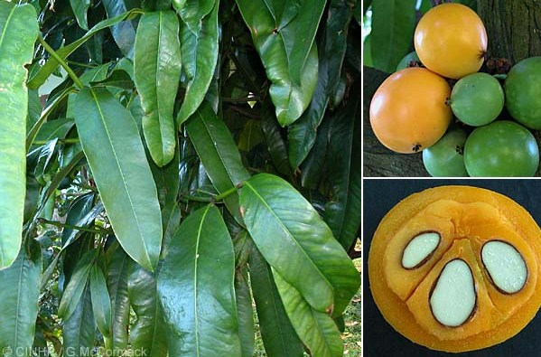

 Kayu-hitam Sulawesi adalah sejenis pohon penghasil kayu mahal dari suku eboni-ebonian (Ebenaceae). Nama ilmiahnya adalah Diospyros celebica, yakni diturunkan dari kata "celebes" (Sulawesi), dan merupakan tumbuhan endemik daerah itu.